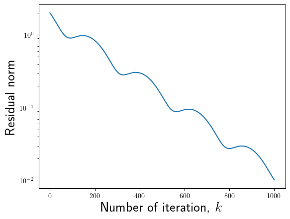

Concept of iterative methods for linear systems: - Richardson iteration and its convergence - Chebyshev iteration
Iterative methods
If we want to achieve \mathcal{O}(N) complexity of solving sparse linear systems, then direct solvers are not appropriate.
If we want to solve partial eigenproblem, the full eigendecomposition is too costly.
For both problems we will use iterative, Krylov subspace solvers, which treat the matrix as a black-box linear operator.
Matrix as a black box
We have now an absolutely different view on a matrix: matrix is now a linear operator, that acts on a vector,
and this action can be computed in \mathcal{O}(N) operations.
This is the only information we know about the matrix: the matrix-by-vector product (matvec)
Can we solve linear systems using only matvecs?
Of course, we can multiply by the colums of the identity matrix, and recover the full matrix, but it is not what we need.
Richardson iteration
The simplest idea is the “simple iteration method” or Richardson iteration.
import numpy as npimport matplotlib.pyplot as plt%matplotlib inlineplt.rc("text", usetex=True)import scipy as spimport scipy.sparseimport scipy.sparse.linalg as splaimport scipyfrom scipy.sparse import csc_matrixn =500ex = np.ones(n);A = sp.sparse.spdiags(np.vstack((-ex, 2*ex, -ex)), [-1, 0, 1], n, n, 'csr');rhs = np.ones(n)ev1, vec = spla.eigsh(A, k=2, which='LA')ev2, vec = spla.eigsh(A, k=2, which='SA')lam_max = ev1[0]lam_min = ev2[0]tau_opt =2.0/(lam_max + lam_min)fig, ax = plt.subplots()plt.close(fig)niters =1000x = np.zeros(n)res_richardson = []for i inrange(niters): rr = A.dot(x) - rhs x = x - tau_opt * rr res_richardson.append(np.linalg.norm(rr))#Convergence of an ordinary Richardson (with optimal parameter)plt.semilogy(res_richardson)plt.xlabel("Number of iterations, $k$", fontsize=20)plt.ylabel("Residual norm, $\|Ax_k - b\|_2$", fontsize=20)plt.xticks(fontsize=20)plt.yticks(fontsize=20)print("Maximum eigenvalue = {}, minimum eigenvalue = {}".format(lam_max, lam_min))cond_number = lam_max.real / lam_min.realprint("Condition number = {}".format(cond_number))#print(np.array(res_richardson)[1:] / np.array(res_richardson)[:-1])print("Theoretical factor: {}".format((cond_number -1) / (cond_number +1)))
Maximum eigenvalue = 3.99984271815512, minimum eigenvalue = 3.932084756989659e-05
Condition number = 101723.207035276
Theoretical factor: 0.9999803389964071
Thus, for ill-conditioned matrices the error of the simple iteration method decays very slowly.
This is another reason why condition number is so important:
Besides the bound on the error in the solution, it also gives an estimate of the number of iterations for the iterative methods.
Main questions for the iterative method is how to make the matrix better conditioned.
The answer is use preconditioners. Preconditioners will be discussed in further lectures.
Consider non-hermitian matrix A
Possible cases of Richardson iteration behaviour: - convergence - divergence - almost stable trajectory
Q: how can we identify our case before running iterative method?
# B = np.random.randn(2, 2)B = np.array([[1, 2], [-1, 0]])# B = np.array([[0, 1], [-1, 0]])x_true = np.zeros(2)f = B.dot(x_true)eigvals = np.linalg.eigvals(B)print("Spectrum of the matrix = {}".format(eigvals))# Run Richardson iterationx = np.array([0, -1])tau =1e-2conv_x = [x]r = B.dot(x) - fconv_r = [np.linalg.norm(r)]num_iter =1000for i inrange(num_iter): x = x - tau * r conv_x.append(x) r = B.dot(x) - f conv_r.append(np.linalg.norm(r))
Spectrum of the matrix = [0.5+1.32287566j 0.5-1.32287566j]
plt.semilogy(conv_r)plt.xlabel("Number of iteration, $k$", fontsize=20)plt.ylabel("Residual norm", fontsize=20)
Text(0, 0.5, 'Residual norm')

plt.scatter([x[0] for x in conv_x], [x[1] for x in conv_x])plt.xlabel("$x$", fontsize=20)plt.ylabel("$y$", fontsize=20)plt.xticks(fontsize=20)plt.yticks(fontsize=20)plt.title("$x_0 = (0, -1)$", fontsize=20)
Text(0.5, 1.0, '$x_0 = (0, -1)$')
Better iterative methods
But before preconditioners, we can use better iterative methods.
There is a whole zoo of iterative methods, but we need to know just few of them.
Attempt 1: The steepest descent method
Suppose we change\tau every step, i.e.
x_{k+1} = x_k - \tau_k (A x_k - f).
A possible choice of \tau_k is such that it minimizes norm of the current residual
The latter inequality is the only approximation. Here we make a crucial assumption that we do not want to benefit from distribution of spectra between \lambda_\min and \lambda_\max.
Thus, we need to find a polynomial such that p(0) = 1, that has the least possible deviation from 0 on [\lambda_\min, \lambda_\max].
Polynomials least deviating from zeros (2)
We can do the affine transformation of the interval [\lambda_\min, \lambda_\max] to the interval [-1, 1]:
It has (n+1)alternation points, where the maximal absolute value is achieved (this is the sufficient and necessary condition for the optimality) (Chebyshev alternance theorem, no proof here).
import numpy as npimport matplotlib.pyplot as plt%matplotlib inlinex1 = np.linspace(-1, 1, 128)x2 = np.linspace(-1.1, 1.1, 128)p = np.polynomial.Chebyshev((0, 0, 0, 0, 0, 0, 0, 0, 0, 1), (-1, 1)) #These are Chebyshev series, a proto of "chebfun system" in MATLABfig, (ax1, ax2) = plt.subplots(1, 2)ax1.plot(x1, p(x1))ax1.set_title('Interval $x\in[-1, 1]$')ax2.plot(x2, p(x2))ax2.set_title('Interval $x\in[-1.1, 1.1]$')
Text(0.5, 1.0, 'Interval $x\\in[-1.1, 1.1]$')
Convergence of the Chebyshev-accelerated Richardson iteration
Note that p(x) = (1-\tau_n x)\dots (1-\tau_0 x), hence roots of p(x) are 1/\tau_i and that we additionally need to map back from [-1,1] to [\lambda_\min, \lambda_\max]. This results into
niters =64roots = [np.cos((np.pi * (2* i +1)) / (2* niters)) for i inrange(niters)]taus = [(lam_max + lam_min - (lam_min - lam_max) * r) /2for r in roots]x = np.zeros(n)r = A.dot(x) - rhsres_cheb_even = [np.linalg.norm(r)]#print(taus)# Implementation may be non-optimal if number of iterations is not power of twodef leb_shuffle_2n(n):if n ==1:return np.array([0,], dtype=int)else: prev = leb_shuffle_2n(n //2) ans = np.zeros(n, dtype=int) ans[::2] = prev ans[1::2] = n -1- prevreturn ansgood_perm_even = leb_shuffle_2n(niters)print(good_perm_even, len(good_perm_even))# good_perm_even = np.random.permutation([i for i in range(niters)])ts = np.array(taus)[good_perm_even]plt.figure()plt.plot(1/ts)for i inrange(niters): x = x -1.0/taus[good_perm_even[i]] * r r = A.dot(x) - rhs res_cheb_even.append(np.linalg.norm(r))plt.figure()plt.semilogy(res_richardson, label="Richardson")plt.semilogy(res_cheb_even, label="Chebyshev")plt.legend(fontsize=20)plt.xlabel("Number of iterations, $k$", fontsize=20)plt.ylabel("Residual norm, $\|Ax_k - b\|_2$", fontsize=20)plt.xticks(fontsize=20)_ = plt.yticks(fontsize=20)
Chebfun toolbox focuses mostly on the following problems
Approximation
Quadrature
ODE
PDE
Rootfinding
1D global optimization
Beyond Chebyshev
We have made an important assumption about the spectrum: it is contained within an interval over the real line (and we need to know the bounds)
If the spectrum is contained within two intervals, and we know the bounds, we can also put the optimization problem for the optimal polynomial.
Spectrum of the matrix contained in multiple segments
For the case of two segments the best polynomial is given by Zolotarev polynomials (expressed in terms of elliptic functions). Original paper was published in 1877, see details here
For the case of more than two segments the best polynomial can be expressed in terms of hyperelliptic functions
How can we make it better
The implementation of the Chebyshev acceleration requires the knowledge of the spectrum.
It only stores the previous vectorx_k and computes the new correction vector
r_k = A x_k - f.
It belongs to the class of two-term iterative methods, i.e. it approximates x_{k+1} using 2 vectors: x_k and r_k.
It appears that if we store more vectors, then we can go without the spectrum estimation (and better convergence in practice)!
Crucial point: Krylov subspace
The Chebyshev method produces the approximation of the form
x_{k+1} = x_0 + p(A) r_0,
i.e. it lies in the Krylov subspace of the matrix which is defined as
The most natural approach then is to find the vector in this linear subspace that minimizes certain norm of the error
Idea of Krylov methods
The idea is to minimize given functional: - Energy norm of error for systems with hermitian positive-definite matrices (CG method). - Residual norm for systems with general matrices (MINRES and GMRES methods). - Rayleigh quotient for eigenvalue problems (Lanczos method).
To make methods practical one has to 1. Orthogonalize vectors A^i r_0 of the Krylov subspace for stability (Lanczos process). 2. Derive recurrent formulas to decrease complexity.
We will consider these methods in details on the next lecture.
Take home message
Main idea of iterative methods
Richardson iteration: hermitian and non-hermitian case
Chebyshev acceleration
Definition of Krylov subspace
Questions?
from IPython.core.display import HTMLdef css_styling(): styles =open("./styles/custom.css", "r").read()return HTML(styles)css_styling()